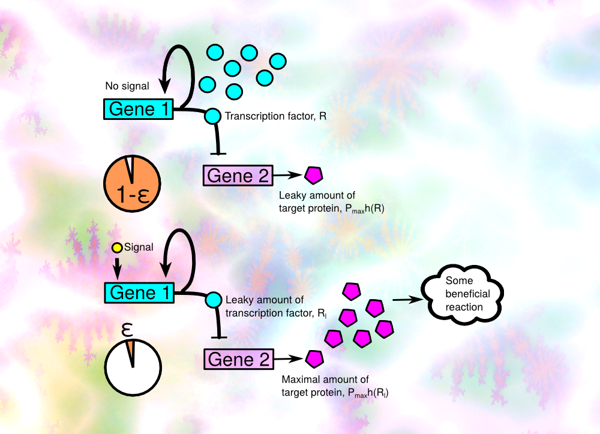

|
<< back
to home page Completed project:
5.2017-5.2023: Evolution of gene regulation as a stochastic
process: Savageau's demand theory, cost of regulation and
noise
The “demand theory”, formulated by the M.A. Savageau in the 70s, explains the evolution of positive or negative gene regulation by the frequency of demand for a given protein and sensitivity of genes to mutations. However, in recent years, with the advent of systems biology and its tools, new studies began to appear, questioning the universality of the theory and extending it with new criteria. Since even a genetically uniform population of cells is subject to random fluctuations in gene expression, a phenotypic diversity exists in such a population. We want to see how taking into account the costs of regulation and random fluctuations in the concentrations of transcription factor complements the classic Savageau’s demand rules? The project is theoretical – we use the tools of statistical physics and the theory of stochastic processes – but it may deliver experimentally testable predictions and can encourage biologists to carry out new types of evolutionary experiments, focusing on the role of randomness in gene expression. In the long term, understanding the evolution of phenotypic diversity is crucial in the struggle against bacterial resistance to antibiotics, one of the most pressing problems of modern medicine. Scientific papers published as the result of the project:
|
|
|